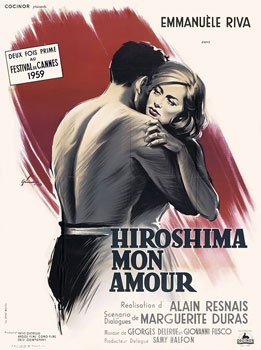

Alain Resnais
1959
88 minutes
TITLE: Hiroshima Mon Amour TEXT PLACEHOLDER 166
This is a weepy romantic drama that starts with a bunch of footage of atomic bomb casualties. It's very atmospheric and depressing as shit--more Hiroshima than Mon Amour. If this film makes you want to travel or have a fling or fall in love, then you are probably very sad and maybe you should get that checked out before getting romantic with anyone. There are some pretty shots of people being intimate, but the overall vibe is "doomed relationship". Maybe save this film for when you've broken up with someone and feel like crying about it.
Alain Resnais makes very pretty films, but this one is going to leave you more bummed out than inspired. This nuclear blast doesn't lead to Godzilla and Mothra. It leads to Sadzilla and Gothra. You're proud of thinking this up for about twenty seconds before realizing how stupid it is. That probably won't stop you from sharing it with others though. Shame on you, you monster.
Time to choose something different: